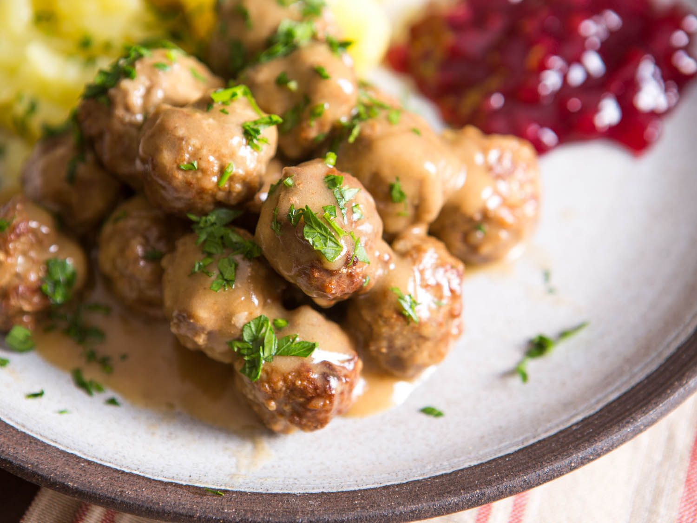

Swedish Meatballs

Swedish meatballs, perhaps the country's most famous culinary item, are actually based on a recipe brought back from Turkey in the early 18th century by King Charles XII of Sweden.
They are a part of both traditional holiday meals and a staple in everyday home cooking.
- 2 tablespoons olive oil, divided
- 1 onion, diced
- 1 pound lean ground beef
- 1 pound ground pork
- 1/2 cup breadcrumbs
- 2 large egg yolks
- 1/4 teaspoon ground allspice
- 1/4 teaspoon ground nutmeg
- 1 1/2 teaspoon kosher salt
- 3/4 teaspoon fresh ground black pepper
- 1/4 cup unsalted butter
- 1/3 cup all-purpose flour
- 3 3/4 cups low-sodium beef broth
- 3/4 cup sour cream
- 2 tablespoons fresh chopped parsley
- 1 lb egg noodles
Meatball Instructions
- Heat 1 tablespoon olive oil in a large skillet over medium heat. Add onion, and cook, stirring frequently, until onions are translucent, about 2-3 minutes; set aside.
- In a large bowl, combine ground beef, ground pork, bread crumbs, egg yolks, allspice, nutmeg and onion. Season with salt and pepper, to taste.
- Stir mixture with a wooden spoon until well combined. Use clean hands to roll the mixture into meatballs about 1 1/2-in in size (It should make about 20-24 meatballs).
- Add remaining 1 tablespoon olive oil to the skillet. Add meatballs, in batches, and cook until all sides are browned, about 4-5 minutes. Transfer to a paper towel-lined plate.
Sauce Instructions
- Melt butter in the skillet. Whisk in flour until lightly browned, about 1 minute. Gradually whisk in beef broth and cook, stirring constantly, until slightly thickened, about 1-2 minutes.
- Stir in sour cream; season with salt and pepper, to taste. Stir in meatballs and cook, stirring occasionally, until heated through and thickened, about 8-10 minutes.
- Serve immediately, garnished with parsley, and enjoy!